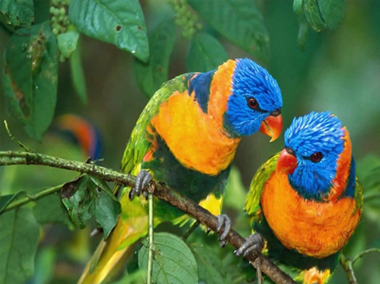
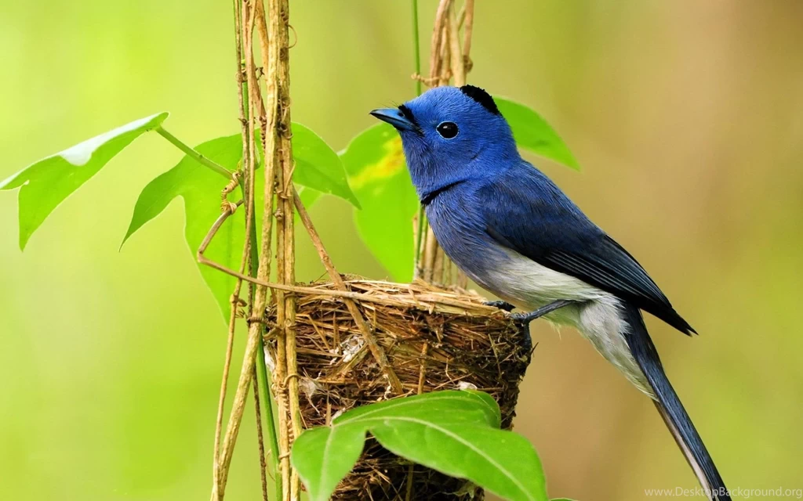
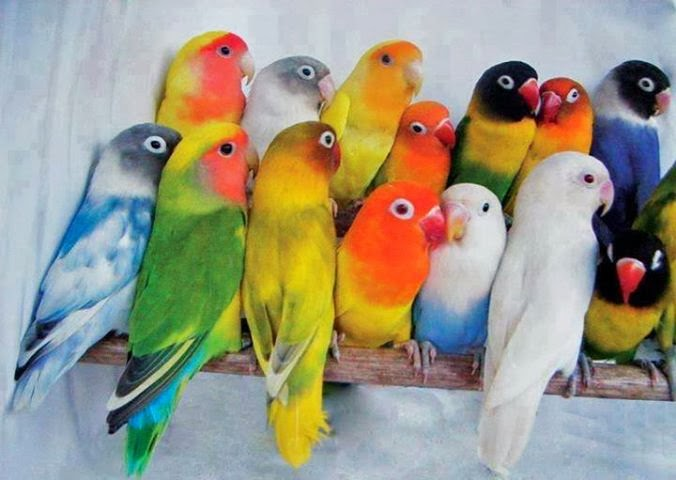
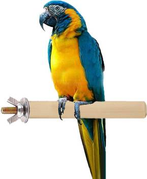
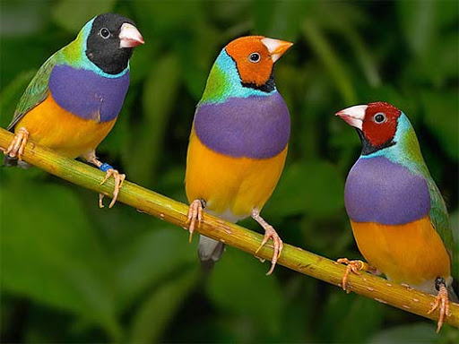
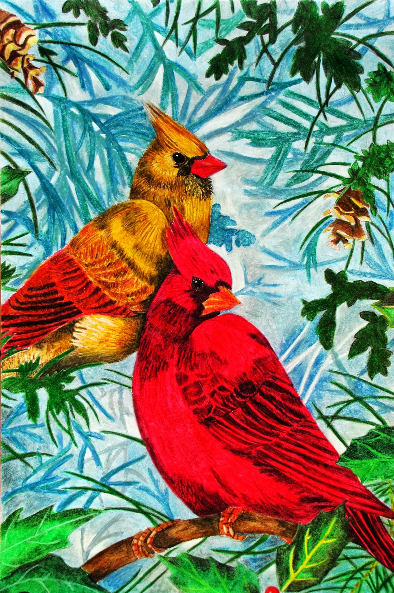

Who Am I?
.png)
Sakshijain, computer Science Engineer,I'm Web-Developer & Social Worker.I'M give a best future of our society & country, my passion is to create a positivity to young genration to build a bright & golden future.
"LOVE IS THE GOLDEN KEY FOR ANY PERSON TO MAKE EACH & EVERY PERSON JUSK LIKE YOUR OWN FMILY & EVERY PERSON IS YOUR FRIEND & ITS GIVES YOU SOO MUCH PLEASURE & HAPPINESS IN YOUR LIFE."
Sakshijain, A Strong frndship doesn't need daily conversation or being together.As long as the relationship lives in the heart,true frnds never part.
Sakshijain,this story belongs to frndship -ITM_FMILY(FMILY OF FRNDSHIP), its a story of simple girl who tolds always truth & frndship is fmily of her.but in this fmily all peoples gives a new identity _"SHE IS MAD"
Sakshijain, its a real-life story of college life, That girl comes to makes own dreams become true & make a new frnds("true-frnds").A new fmily of frndship-ITM_FMILY,but Some moments,some peoples,some situations will not want to become this dream truth & after some time that girl make ur own way & new world.THATS WHY EVERYONE SAYS THATS TIME CHANGES EVERYTHING_(Strangers world),these peoples gives a lot of happiness & learn something new everyday.
Sakshijain,its a fmily of "ANGELCREATION".its a story of frndship-true frndship(best frnds).In this story a girl who's name is "sakshi" & their frnd that is there best friend"shiv".In ITM that girl having a frnd "shiv" but that girl don't know anything about their relationships means frndship.For a long time that girl realize that relationships in ITM & then she know that "THOSE FRND WHO THEY DO FRNDSHIP IN ITM FIRST IN THEIER COLLEGE IN LIFE HE ISN'T ONLY A FRND FOR HER HE IS A COLLEGE LIFE BEST FRND-("SHIV")",WHEN THAT GIRL THIS TRUTH OF THEIR LIFE SHE BECOME VERY SHOCKED & FOR SOME MOMENTS SHE FORGETS EVERYTHING.
Sakshijain,IN this story that girl learn so many things in life,but in their college life they find their true frnds & one sepical frnd that r the teacher in life & that frnd gives a lot of true golden memories,respect & support to face every problems in life ,that frnd is come in frnd in their life but that frnd is such a "great teacher" for that girl -"ANMOL",its a name of that frnd who that girl meet in college & after their best frnd shiv second frndship in ITM(college) that frnd is teacher for that girl "sakshi" -this girl always says truth to everyone,that girl who try to make a new fmily like frndship in ITM-FMILY but time chnges the whole life of that girl & she knows& learn some golden lessons in life-"frndship is my fmily, & most of the bad peoples thier feelings is a type of fun",{"TIME CHNGES EVERYTHING IN LIFE"}...there are so many peoples in this whole world who gives u own identify & make insult u infront of everyone according to your choice."
Sakshijain,AngelCreation story of frndship.TO learn & achieve your goals in your life becomes true & frndship is fmily that belongs to real-frnds who treat as a own-fmily."BEST FRNDS IS THAT PERSON A GIRL SHARE EVERYTHING TO THAT PERSON-FEAR,HESTITATION,HEART-BREAKS,LOVESTORY,PAIN & HAPPINESS -("I WANT MY BEST FRND BACK-PLEASE SHIV COME BACK IN MY LIFE AS A MY "BEST FRND")
